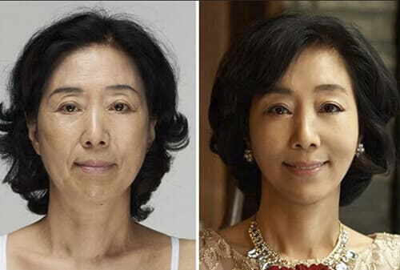
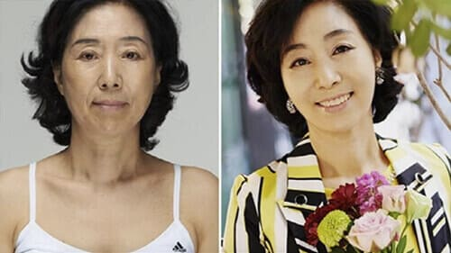
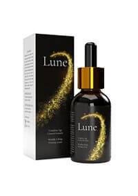
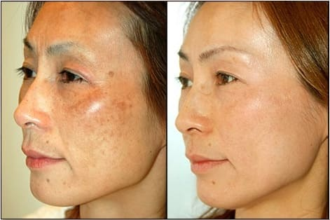

WANITA INI DIBERHENTIKAN SAAT AKAN BERLIBUR KELUAR NEGERI KARENA MENGGUNAKAN SERUM PEREMAJAAN YANG DICIPTAKAN PUTRINYA
Karena kejadian tersebut, akhirnya semua orang tahu akan produk serum peremajaan kulit yang sangat mengagumkan ini. Produk ini diciptakan oleh gadis asal Indonesia untuk ibunya tercinta yang mempunyai banyak kerutan wajah.

Kejadian ini terjadi belum lama salah satu bandara di Indonesia dengan penerbangan Jakarta-Singapura. Petugas bandara harus mengamankan seorang penumpang berusia 45 tahun karena foto dokumen yang tidak sesuai.
Petugas bandara terpaksa harus mengamankan wanita ini dikarenakan foto paspor yang tidak sesuai dengan wajah aslinya saat itu. Wanita itu mengaku jika dia menggunakan serum wajah yang diciptakan oleh putrinya. Petugas bandara pun tidak percaya dan harus melakukan klarifikasi.
- Kami mengikuti prosedur. Foto paspor beliau terlihat seperti orang yang berbeda, terlihat 15 tahun
lebih muda. Sedangkan paspor ini baru dikeluarkan sekitar 1 bulan lalu. Ini hal yang mustahil, karena
operasi plastik pun tidak bisa secepat ini. Kecurigaan kami pun dimulai dasi sana.
Cintia Dewi (petugas bandara)
Ternyata serum yang membuat wanita ini bisa tampak lebih muda dengan cepat tanpa operasi adalah serum peremajaan yang diciptakan oleh putrinya sendiri untuk membantu dirinya menjadi cantik dan muda seperti waktu beliau muda.

Halo Kinanti, Bisakah Anda menceritakan lebih lanjut tentang produk peremajaan Anda yang efektif ini sampai ibu Anda harus mengalami kejadian tersebut di bandara?
Seperti yang Anda tahu, saya menciptakan produk ini untuk ibu saya tercinta. Saya tidak tega saat melihat ibu saya harus sedih dan berjuang sendirian demi hidup dan pendidikan saya, terutama setelah ayah saya meninggalkan kami. Ibu saya bekerja siang malam dan menjalani 2 kerja sekaligus dan harus memikul semua kewajiban keluarga sendiri. Saat usia beliau baru menginjak 45 tahun, beliau terlihat lebih tua karena stress dan capek yang harus dirasakannya setiap hari. Hal ini membuat ibu saya menjadi sulit untuk membuka diri untuk pria baru dan mengembalikan kebahagiannya seperti dulu.
Jadi itu alasan Anda menciptakan produk ini?
Ya benar, saya tidak tega melihat ibu saya terlihat lelah setiap hari. Saya ingin membuat suatu produk yang bisa mengembalikan kecantikan ibu saya lagi agar beliau menjadi percaya diri dan bisa lebih bahagia. Saya sudah mencoba mencari produk peremajaan, masker dan lain-lain di apotek atau salon kecantikan, tetapi saya tidak bisa menemukan produk yang bagus dan efektif. Akhirnya saya pun memutuskan untuk membuat produk ini sendiri.
Oh begitu, bisakah Anda ceritakan lebih lanjut?
Kebetulan saya sudah lulus dari Universitas dan menguasai ilmu farmasi, dengan kemampuan dan pengetahuan yang saya punya, saya pun menciptakan produk ini hanya menggunakan bahan-bahan alami yang aman untuk kulit dan tubuh.
Setelah saya meminta ibu saya untuk mencoba serum ini, hasilnya sangat menakjubkan! Saya pun memberikannya hadiah tiket pesawat ke Singapura. Saya menabung sudah dari lama dengan menjalani kerja sampingan, saya ingin berterima kasih kepada ibu saya dan membuatnya bahagia dengan memberikan liburan agar beliau bisa istirahat sambil membukakan hati untuk pria baru. Saya tidak menyangka beliau harus diamankan sebentar karena inovasi saya ini, tetapi memang saat saya melihat hasilnya pun saya juga terkejut. Sekarang ibu saya terlihat sangat cantik dan menarik seperti waktu beliau masih muda.
Produk ini secara cepat memudarkan dan menghaluskan kerutan wajah, bahkan untuk kerutan yang sudah arah. Kandungan bahan alami yang saya pakai membuat hasilnya sangat alami dan halus. Setelah saya melihat hasilnya dan sadar jika ini produk yang luar biasa, saya pun langsung membuat hak paten dan seperti yang sudah saya duga, telepon dari berbagai pihak pun mulai saya dapatkan untuk mengalihkan hak paten produk ini.
Lalu apa keputusan Anda setelah itu?
Tentu saja saya menolaknya. Alasan saya membuat serum peremajaan ini adalah untuk membahagiakan ibu saya, bukan untuk mencari keuntungan. Saya juga ingin para wanita Indonesia, bisa memiliki kulit halus tanpa kerutan tanpa harus melakukan operasi yang berharga ratusan juta rupiah. Saya sudah punya prinsip saya sendiri dan saya tidak akan melanggarnya.
Lalu bagaimana Anda bisa memproduksi produk ini? Bukankah ini membutuhkan dana yang besar?
Kepala Universitas saya bekerjasama dengan laboratorium dan Institut Ilmu Sains yang membantu saya. Berkat mereka, saya bisa mewujudkannya. Produk ini disebut Lune.
Serum Kinanti ini produk yang ajaib! Kandungan bahan alami yang dipilihnya dengan takaran yang tepat
menciptakan perpaduan yang sempurna untuk meremajakan kulit. Kami sudah melakukan uji coba pertama dan
hasilnya luar biasa!
Lune tidak memiliki kontradiksi dikarenakan bahan
alaminya yang membuat Anda tidak perlu mengambil resiko.
Lune juga bisa digunakan segala usia tanpa ada batasan umur.
Uji klinis membuktikan jika wanita yang berusia di atas 65 tahun akan memiliki
hasil yang lebih cepat untuk menghilangkan kerutan di wajah.
Lune juga diperuntukan untuk wanita berusia 20 tahun
untuk pencegahan timbulnya kerutan di kemudian hari. Ini adalah produk yang terbaik di dunia
kecantikan.
Selama masa saya berkarir, saya dengan yakin mengatakan jika belum ada produk inovasi sebaik ini.
Sulaiman Yanto (Pekerja senior laboratorium universitas farmasi)
Kami pernah mencoba untuk menjual produk ini di apotek, tetapi karena kami ingin menjualnya dengan
harga yang semurah mungkin, mereka menolak dan menyarankan untuk menjualnya dengan harga yang tinggi.
Kami ingin produk ini bisa dibeli semua orang dari semua kalangan bukan mengambil keuntungan sebanyak
mungkin.
Karena bertentangan dengan prinsip kami. Kami pun memutuskan untuk mendistribusikan produk kami
sendiri dan menjualnya dengan harga 590,000 Rp.
Fajar Mukti (Kepala Institut Ilmu Pengetahuan dan Penelitian)
Kami pun bertemu dengan ibu dari Kinanti dan bertanya tentang kejadian yang terjadi di bandara tersebut sambil tertawa.
Seperti yang Anda tahu, sebenarnya saya senang kejadian itu terjadi, para petugas tidak percaya jika yang ada di foto paspor tersebut adalah saya sendiri, mungkin saya harus diamankan sementara dan ditanya beberapa pertanyaan untuk memastikan identitas, tapi setelah mereka bilang jika wajah saya terlihat lebih muda daripada foto di paspor, jujur saya senang sekali. Ini benar-benar suatu keajaiban!
Putri Anda bilang Anda lah alasannya untuk membuat Lune ini, bagaimana tanggapan Anda?
Saya pun merasa terharu dan bangga saat mengetahui jika saya adalahnya motivasinya untuk mengembangkan produk ini. Saya masih ingat saat pertama kali putri saya membawakan botol berisi serum ini dan memberikannya pada saya, tidak ada nama pabrik atau merek di botol itu tetapi dia meyakinkan saya untuk mencobanya. Saya sangat berterima kasih.
Berapa lama setelah penggunaan dan Anda menyadari perubahannya?
Tidak sampai sebulan. Setelah putri saya memberikan hadiah tiket ke Singapura, saya pun menggunakan serum itu setiap hari dan saya terkejut dengan hasilnya. Saya terlihat 15 tahun lebih muda! Anda bisa melihatnya sendiri.

Bukan hanya wajah saya yang terlihat lebih muda dan menarik, hidup saya juga jadi lebih membaik. Saya menjadi percaya diri, orang-orang di sekitar saya bersikap baik kepada saya, pria pun juga mulai mendekati saya, hidup saya benar-benar berubah! Saya tidak hanya merasa muda dari luar tetapi juga dari dalam! Saya menjadi lebih ceria dan bahagia, saya pun akan berkencan dengan seorang pria yang tidak akan saya sebutkan umurnya, tetapi dia lebih muda dari saya.
Ini semua berkat putri saya. Saya sangat bahagia dan bangga karena dia sudah menciptakan Lune untuk saya dan juga memproduksinya agar semua wanita di Indonesia bisa menjadi cantik dan terlihat lebih muda. Saya pun dapat menikmati liburan saya karenanya.
Serum Lune sudah melalui uji klinis dan dijual di situs resmi dengan pengiriman menggunakan kurir ke seluruh Indonesia. Walaupun produk ini produk baru, tetapi sudah banyak muncul produk palsu di pasaran. Saya peringatkan untuk berhati-hati agar tidak tertipu untuk membeli produk palsu.
Produsen Lune memutuskan untuk memberikan diskon 50% khusus untuk pembaca artikel kami, dengan mengisi formulir pemesanan di bawah ini, dan konsultan kami akan segera menghubungi Anda.

194 komentar
Saraswati Ningrum
Tunggu apalagi? Ayo pesan Lune sekarang! Saya sudah langganan, ini pembelian ke 4 saya.
Indira Cinta
Kisah yang luar biasa! Saya akan membelinya.
Mega Nuryani
Memang penampilan dari luar bisa mempengaruhi emosi dari dalam. Jika wajah Anda menjadi lebih menarik
dan segar, kehidupan Anda pun juga akan menjadi lebih baik!
Nuraini Kintan
Saya setuju! Saya sudah memakai serum ini sejak lama dan suami saya bilang jika saya terlihat lebih
muda.
Mira Skolastika
Ini foto saya. Sekarang, saya bahkan malu melihat bagaimana tampilan saya dulu!
Karlina Sukarwo
Saya juga setuju! Masker benar-benar bekerja efektif dengan kekurangan yang ada di wajah - semuanya lenyap - kerutan dan kekenduran. Dari kali pertama hasilnya sudah kelihatan.
Yani Rahimah
Usia saya 53 tahun, bagaimana menurut Anda - masker ini bisa membantu? Ada kerutan yang sangat dalam
Farah Eva Susanti
Seharusnya membantu. Bagaimanapun, ini masih jauh lebih baik dibandingkan yang lainnya yang pernah
saya coba

Yunita Almira Kuswandari
Serum ajaib! Ini saya bagikan hasilnya

Kania Kasiyah Yuniar
Berapa lama waktu yang diperlukan untuk transformasi semacam ini?
Yunita Almira Kuswandari
Sebulan lebih sedikit
Ulva Rahayu
Senang sekali begitu saya tahu tentang masker ini! Banyak hal yang berubah dalam hidup saya. Sekali
lagi saya dapat kebahagiaan seorang wanita sejati.. terima kasih!
Widya Santi
Semua orang mengira saya berumur 30 tahun, padahal saya sudah berumur 43 tahun haha! Mereka semua tidak percaya. Terimakasih Lune :)
Ini serum ajaib. Saya tidak masalah untuk ketinggalan 10 penerbangan sekalipun! Saya akan membelinya